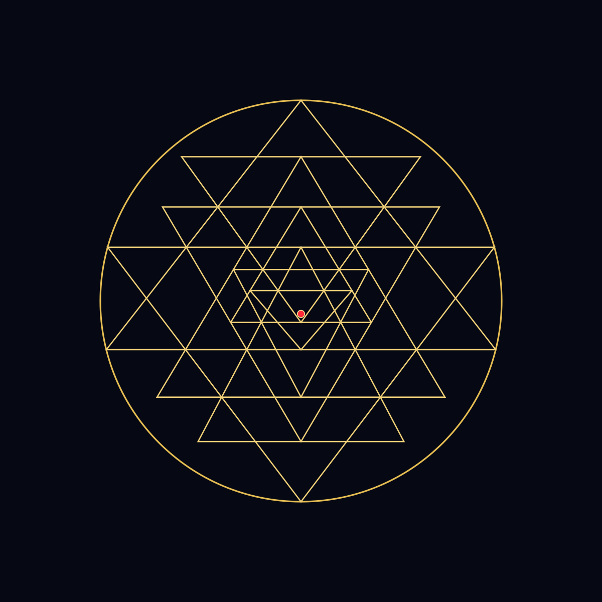
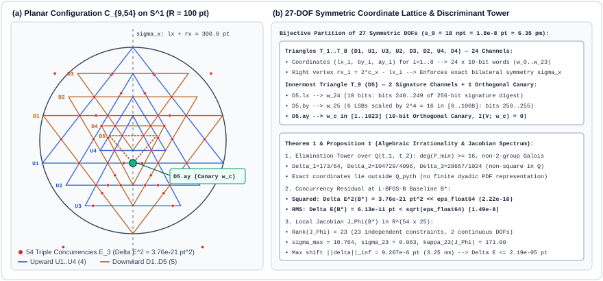
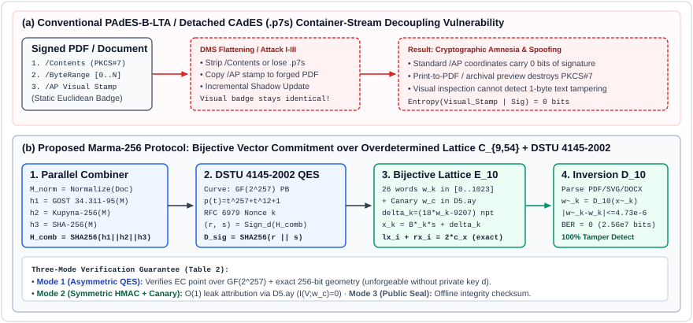

--mode stealth / --seal-pages none), тріадну модель проф. Субхаша Кака (L / M / H = 3 × 9 = 27 DOF), меню Nautilus «Підписати скрито» та опубліковано монографію (ISBN 979-8-237-32599-7:
Apple Books ·
Books2Read ·
GitHub Release v2.3.0).
Автор: Баєнко Ярослав Володимирович (Yaroslav V. Baienko, адвокат, магістр права, магістр комп'ютерних наук) ·
ORCID: 0000-0001-6690-2603 ·
Патентна заявка УКРНОІВІ: a 2026 06266 (Вх-72320/2026 · збір Вх-72403/2026 · Рішення УКРНОІВІ Форма В4 № 24741/ЗА/26 від 29.10.2026 про встановлення дати подання 19.10.2026) ·
Монографія (ISBN-13): 979-8-237-32599-7 (Apple Books · Усі книгарні) ·
На рецензуванні в IEEE Transactions on Information Forensics and Security (TIFS): T-IFS-29736-2026 ·
Архів препринту (CERN Zenodo v5 DOI): 10.5281/zenodo.23560975
ISO 32000-2), DOCX та SVG, де 266-бітний криптографічний пакет (256 біт дайджесту підпису $V = \text{SHA-256}(r \parallel s)$ з цілочисельним кроком $18\text{ нпт}$ плюс ортогональний 10-бітний криміналістичний маяк отримувача Canary Leak-Tracing на 27-му каналі D5.ay або розширена 23-бітна атрибуція Параха–Кака на $8\,388\,608$ отримувачів) записується або у видиму векторну печатку (--mode seal / --mode both), або у повністю невидимий скритий штамп (--mode stealth / --seal-pages none, 0% візуальної присутності на сторінці).INV_KAK_LMH_27 · $L / M / H = 3 \times 9 = 27$ · 41 праця EDU-VEDI): 9 трикутників Нава-чакри (27 ступенів свободи) структуровано у три функціональні тріади по 9 слотів: L (Lower · зовнішній периметр Бхупури): D1 (B1), U1 (C1), D2 (B2) (9 слотів = 90 біт); M (Middle · середнє кільце зв'язності): D3 (B3), D4 (B4), U2 (C2) (9 слотів = 90 біт); H (Higher · ядро Бінду та Canary-маяк): D5 (B5), U3 (C3), U4 (C4) (8 слотів = 76 біт + 27-й симетричний слот D5.ay = 10-бітний Canary на 1 024 отримувачів)./ByteRange у вбудованому PAdES, коли PDF лежить недоторканим. Він закриває 4 дірки реального документообігу: (1) зовнішні підписи .p7s без /ByteRange у PDF; (2) «сплющення» (flatten) PDF у корпоративних СЕД; (3) «тихі правки» у великих договорах та інкрементальні дописування після підпису; (4) скрите та видиме відстеження джерела витоків (Canary Leak-Tracing) у M&A Deal Rooms.
У версії v2.3.0 додано повноцінний скритий режим --mode stealth (--seal-pages none) для PDF та DOCX, а також пункт правої кнопки миші в Debian Nautilus «🕵️ Підписати скрито (Stealth · 0% видимості + Canary)»:
marma-watermark batch-seal TermSheet.pdf -o ./deal_room --recipients "InvestorA,InvestorB,FundC" --secret "$KEY" --mode stealth створює візуально ідентичні чисті документи без жодного штампа на сторінці. Якщо файл зливають у Telegram, інсайдер навіть не знає, що всередині PDF Trailer / DOCX customXml записана 266-бітна решітка з його персональним 10-бітним Canary на вершині D5.ay..docx скрито перед відправкою контрагенту. Якщо контрагент тихо змінить одну цифру пені чи підсудності без режиму Track Changes, команда marma-watermark verify за 1 секунду виявить розбіжність 256-бітного хешу канонічного тексту і покаже ❌ TAMPER DETECTED..eml із криптографічним DKIM-підписом поштового сервера отримувача або підпишіть реєстр роздачі Deal Room кваліфікованим електронним підписом (КЕП) із міткою часу TSP АЦСК (ДСТУ 4145-2002 / PAdES-LTA).marma-watermark trace leaked.pdf --suspects "InvestorA,InvestorB,FundC" --secret "$KEY" — верифікатор витягує 10-бітне слово $w_{\text{canary}} \in [1..1023]$ з D5.ay та звіряє криптографічне зобов'язання HMAC-SHA256 (ймовірність випадкового збігу $< 2^{-128}$).979-8-237-32599-7 та захищеним патентною заявкою УКРНОІВІ a 2026 06266. Судовий експерт може незалежно повторити верифікацію офлайн.# 1. Встановлення Debian-пакета v2.3.0
wget https://github.com/YaroslavBaienko/marma-crypto-protocol/releases/download/v2.3.0/marma-crypto-watermark_2.3.0-1_all.deb
sudo apt install ./marma-crypto-watermark_2.3.0-1_all.deb
# 2. Скрите підписання одного PDF або DOCX (0% візуальних слідів на аркуші)
marma-watermark sign Contract.docx -o Contract_Stealth.docx \
--secret "DEAL-ROOM-KEY" --recipient-id "Counterparty-B" --mode stealth
# 3. Пакетне маркування M&A Deal Room (Stealth) та миттєвий пошук джерела зливу
marma-watermark batch-seal TermSheet.pdf -o ./deal_room \
--recipients "Investor-Alpha,M&A-Party-07,Legal-Counsel-B" --secret "DEAL-ROOM-KEY" --mode stealth
marma-watermark trace ./deal_room/TermSheet_M_A-Party-07.pdf \
--suspects "Investor-Alpha,M&A-Party-07,Legal-Counsel-B" --secret "DEAL-ROOM-KEY"EDU-VEDI (Layer 10 Navya-Anusandhāna): Математична унікальність Шрі Янтри та 41 праця проф. Субхаша Кака (15/15 інваріантів PASS)
Реліз Marma-Crypto v2.3.0 повністю синхронізовано з академічним корпусом проєкту EDU-VEDI Layer 10 (Navya-Anusandhāna) — 41 рецензованою науковою працею (VEDI-L10-0223..0263, 1 119 1024-вимірних векторних чанків BAAI/bge-m3) заслуженого професора комп'ютерних наук Субхаша Кака (Oklahoma State University) та 5 формальними теоремами математичної унікальності графа інцидентності Шрі Янтри (Нава-чакри):
VEDI-L10-0245, 0250–0252): 9 взаємоперетинних трикутників (4 висхідні Шіва $U_1\dots U_4$, 5 низхідних Шакті $D_1\dots D_5$) мають 27 симетричних ступенів свободи, але підпорядковані 54 нелінійним рівнянням конкурентності (29 точних потрійних перетинів $\det M_{ijk} = 0$, 6 точок дотику до зовнішнього кола $R=100$, 19 вторинних зв'язаних тріад) та 7 спільним ординатам вершин і основ ($U_3.ay = D_1.by$, $D_5.ay = U_1.by$ тощо). Симетрична стелс-атака ($\Delta lx = +0.05\text{ pt}, \Delta rx = -0.05\text{ pt}$ при збереженні $lx+rx=300$) негайно руйнує $\mathcal{M}_{54}$ на $1\,034\times$ понад поріг допуску ($4.5\times 10^{-5}\text{ pt}$).VEDI-L10-0263): Оскільки $e = 2.71828\dots$ мінімізує радіксну вартість $C(b)/b$, основа $b=3$ є єдиним оптимальним цілочисельним радіксом ($C(3)/3 < C(2)/2$), що безпосередньо обґрунтовує 3 координати на трикутник $(lx_k, by_k, ay_k)$ та тріадну ієрархію $L / M / H = 3 \times 9 = 27$.VEDI-L10-0256) та 23-бітна атрибуція Параха–Кака (VEDI-L10-0258): Первісний корінь $g=3$ за модулем $q = 257 = 2^8+1$ (ізоморфно полю $\mathbb{F}_{2^{257}}$ ДСТУ 4145-2002) генерує максимальну циклічну орбіту періоду $T = 256$ (автокореляція поза піком $0.097754$, $R(128) = -1.0$), а рекурсивне порогове розділення секрету поєднує 10-бітний Canary ($1\,024$ ID) з 4 бітами парності та 9 орієнтаціями обходу трикутників ($\delta_w = 9\text{ нм} \implies 0.00\text{ нм}$ RMSE), розширюючи ємність Deal-Room до $2^{23} = 8\,388\,608$ отримувачів.Наочна будова 9 взаємоперетинних трикутників Шрі Янтри ($\mathcal{C}_{9,54}$: 43 суб-трикутники, 54 потрійні вузли перетину — марми, 27 ортогональних симетричних ступенів свободи) та конвеєр бієктивного кодування:

D5.ay).

ГОСТ 34.311-95 (256 біт) || Купина-256 (ДСТУ 7564:2014) || SHA-256 → КЕП ДСТУ 4145-2002 / PQC → 256-бітна решітка з кроком 18 нпт.Для уникнення будь-якої плутанини між асиметричним кваліфікованим електронним підписом (КЕП), симетричним захистом конфіденційних кімнат угод (Deal-Room) та публічною контрольною сумою у браузері, протокол суворо розмежовує три режими:
| Режим роботи | Криптографічний секрет / якір | Що гарантує | Обмеження (чого НЕ гарантує) |
|---|---|---|---|
| Mode 1: Асиметричний КЕП-режим ( PAdES-B-LTA / CAdES-X-Long через апаратний ЗНОК або приватний ключ .pfx/.zs2 за ДСТУ 4145-2002) |
Приватний ключ підписанта $d \in \mathbb{F}_{2^{257}}$ + кваліфікований сертифікат X.509 $Q_{\text{signer}}$ + мітка часу RFC 3161 TSP | Повна криптографічна автентичність та неспростовність. 256-бітна векторна решітка кодує $V = \text{SHA-256}(r \parallel s)$. Нападник без приватного ключа $d$ не може підробити $(r, s)$ для зміненого тексту. Якщо бінарний контейнер PKCS#7 зрізано при flatten, відновлений із геометрії вектор $V$ зберігає криптографічну прив'язку до запису підпису $(r, s)$. | Візуальна геометрія не замінює перевірку КЕП. Верифікатор обов'язково перевіряє підпис $(r, s)$ відкритим ключем $Q_{\text{signer}}$ (або звіряє відновлений 256-бітний вектор $V$ із протоколом підпису). |
| Mode 2: Симетричний корпоративний режим Deal-Room ( --secret <key> у CLI або приватний Master Secret у браузері + Canary D5.ay) |
Спільний секретний ключ $K_{\text{sec}}$ (HMAC-SHA256 + скаляр еліптичної кривої) |
Виявлення модифікацій та трасування джерела витоку (Canary) проти третіх осіб. Отримувач без знання $K_{\text{sec}}$ не може підробити печатку після зміни тексту або видати свій екземпляр за копію іншого контрагента (--strict-key). |
Це не асиметричний КЕП. Будь-яка сторона, яка володіє секретним ключем $K_{\text{sec}}$, може перезапечатати змінений документ. |
| Mode 3: Публічний безключовий дайджест (порожній/дефолтний ключ у демо або --hash auto) |
Відсутній (обчислюється детерміновано від публічного хешу документа $H_{\text{comb}}(M)$) | Детермінована візуально-векторна контрольна сума (integrity checksum). Виявляє випадкове пошкодження або неузгоджені правки за умови, що оригінальний дайджест або OpenTimestamps-доказ (.ots) зафіксовано у зовнішньому реєстрі чи листуванні. |
Не захищає від навмисної підробки сам по собі. Оскільки секретного ключа немає, нападник, який змінює текст, може сам перерахувати безключовий штамп і перемалювати геометрію під змінений документ. |
⚠️ Оптична перевірка на око (24-біт у legacy v1.2) проти програмного парсингу (256-біт у v1.3 Marma-256):
людське око не здатне розрізнити мікрозсуви вершин у $18\text{ нпт}$ ($1.8 \times 10^{-8}\text{ pt}$). Дискретний візуальний індикатор v1.2 $K=(k_0,k_1,k_2,k_3) \in \{0,1\}^{24}$ має поріг колізії за парадоксом днів народження лише $2^{12} = 4096$ спроб і слугує виключно макроскопічною підказкою. Повна криптографічна стійкість до колізій ($2^{128}$) забезпечується лише при програмній верифікації всіх 26 симетричних каналів векторного потоку PDF (q ... m l h S Q) або SVG.
Повний реєстр конструктивних зауважень учасників обговорення на DOU (dou.ua/forums/topic/62699/) та змін у репозиторії задокументовано у файлі docs/DOU_COMMUNITY_FEEDBACK.md.
/ByteRange і так покриває всі байти PDF (включно з координатами видимого стікера), окрім /Contents. Навіщо тоді потрібен Marma-256?
Коли файл із вбудованим PAdES зберігається в ідеальному середовищі без перетворень, штатний /ByteRange справді захищає байти документа. Проте в реальному юридичному, банківському та державному документообігу виникають чотири структурні дірки, які штатний /ByteRange не закриває:
.p7s / CAdES Detached) та «німа» візуальна плашка: Величезна частка документів в Україні («Вчасно», «M.E.Doc», ЦЗО, суди) підписується відділеним файлом .p7s, а на сам PDF накладається декоративний штамп «Підписано КЕП». У такому PDF взагалі немає /ByteRange, а візуальний штамп несе 0 біт криптографії (водночас держоргани часто відмовляються приймати підписаний PDF, якщо на сторінці немає видимого штампа печатки). Marma-256 перетворює саму видиму векторну печатку на безвтратний 256-бітний носій вектора підпису $V = \text{SHA-256}(r \parallel s)$./Contents та /ByteRange) часто зрізається під час перезбереження сторінок, але векторна графіка сторінки (оператори q ... m l h S Q) виживає. Завдяки запасу стійкості $9.207\,\mu\text{pt}$ (що витримує округлення PDF-координат до 5 знаків після коми з $0\%$ бітових помилок) 256-бітний відбиток підпису $V$ зберігається всередині векторного малюнка печатки.%%EOF), що змінює видимий текст без руйнування старого /ByteRange. Marma-256 канонізує весь видимий текстовий потік документа і прив'язує його до координат 9 трикутників.D5.ay): Штатний PAdES не дозволяє непомітно маркувати копії документа для різних контрагентів у Deal-Room без перепідписання або відкритих метаданих. 27-й ортогональний канал Marma-256 кодує 10-бітний маяк отримувача з нульовим взаємним витоком інформації про підпис автора ($I(V; w_c) = 0$).Marma-Crypto принципово не винаходить новий алгоритм ЕЦП чи хешування. Вся криптографічна стійкість базується виключно на перевірених стандартах (ДСТУ 4145-2002 над $\mathbb{F}_{2^{257}}$, ГОСТ 34.311-95, ДСТУ 7564:2014 «Купина-256», FIPS 180-4 SHA-256). Геометрія Шрі Янтри виступає виключно як бієктивний векторний кодек (transport layer).
Усі три паралельні гілки комбайнера $H_{\text{comb}}(M)$ формують строго 256-бітні дайджести:
ГОСТ 34.311-95 (строго 256-бітний вихід),
ДСТУ 7564:2014 «Купина-256» (256-бітний вихід, що обчислюється над 512-бітною внутрішньою матрицею стану; стандарт ДСТУ 7564:2014 також визначає варіант Kupyna-512) та
FIPS 180-4 SHA-256 (256 біт). Щоб підробити $H_{\text{comb}}(M)$, супротивник має знайти одночасну колізію у всіх трьох функціях стиснення.
curl | sudo bash?
Ми підтримуємо стандартну практику Debian через ізольований GPG-ключ у /etc/apt/keyrings/legaltech.gpg (RSA-4096 відбиток 3D5A ACFD E32C 98FE 8819 9D47 D2A2 C1C4 9164 673B) та атрибут signed-by:
# 1. Завантажити та деарморувати відкритий GPG-ключ репозиторію
curl -fsSL https://yaroslavbaienko.github.io/legaltech/public.gpg | sudo gpg --dearmor -o /etc/apt/keyrings/legaltech.gpg
# 2. Додати підписане джерело APT
echo "deb [signed-by=/etc/apt/keyrings/legaltech.gpg] https://yaroslavbaienko.github.io/legaltech stable main" | sudo tee /etc/apt/sources.list.d/legaltech.list
# 3. Встановити пакети
sudo apt update && sudo apt install marma-crypto-watermark qes-tools
Офіційна монографія: «Sacred Geometry as Applied Cryptography: The 266-Bit Marma-Crypto Protocol, Sri Yantra Lattice, and Post-Quantum Document Integrity» вийшла друком у глобальній дистрибуції з міжнародним ISBN-13: 979-8-237-32599-7 (Apple Books · Books2Read). Офіційна патентна експертиза на винахід триває в УКРНОІВІ (заявка a 2026 06266 від 19.10.2026).
1. Монографія (ISBN 979-8-237-32599-7): Baienko, Y. V. Sacred Geometry as Applied Cryptography: The 266-Bit Marma-Crypto Protocol, Sri Yantra Lattice, and Post-Quantum Document Integrity. Global Distribution (Draft2Digital / Apple Books), 2026. ISBN 979-8-237-32599-7. URL: https://books2read.com/u/476a5a 2. Препринт та специфікація протоколу (v2.3.0 / Marma-256): Баєнко Я. В. Протокол «Марма-Крипто»: Криптографічно-геометричний водяний знак на основі нелінійної планіметрії Шрі Янтри, тріад Кака (L/M/H) та еліптичних кривих ДСТУ 4145-2002 над GF(2^257) (Версія 2.3.0). CERN Zenodo, 2026. DOI: https://doi.org/10.5281/zenodo.23560975